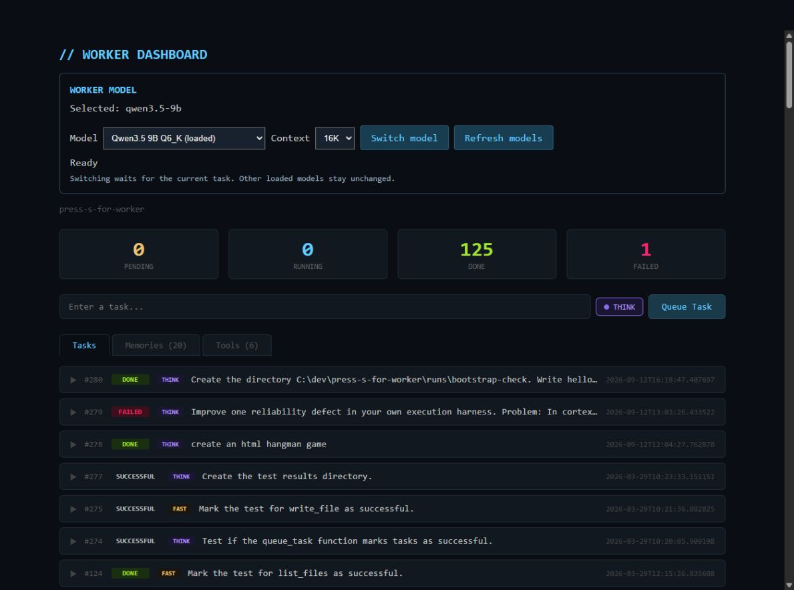

Local does not mean contained
Running the model on my computer gives me control over the hardware and model choice, but tools still need explicit workspace boundaries. Otherwise a local worker can alter the wrong file just as easily as a remote one.
Press S for Worker · Local-first agent experiment
Press S for Worker explores a personal AI worker that runs on hardware you control, remembers useful work, develops tools, and lets you see what it is doing. The project asks what it would take for that worker to become more capable over time without becoming opaque or unaccountable.

The concept
Most AI assistants feel temporary. You open a session, explain the context again, and rely on a service whose internal work you cannot really see. I wanted to explore a different relationship: a worker on my own computer that could retain useful knowledge, reuse tools, and become better suited to the way I work.
The name comes from StarCraft. Pressing S creates another worker, and a strong economy grows one worker at a time. I treated the roadmap like a build order, adding memory, tools, task management, and model controls as distinct capabilities instead of declaring a large autonomous system at the start.
That made this both an application and an experiment. Every task was a chance to ask what the worker could do, where it failed, and what the surrounding system needed to make the next attempt more dependable.
Why it matters
A personal AI worker could hold onto the context of long-running projects, perform repetitive work, and develop reusable capabilities instead of starting over each time. Running locally also creates the possibility of choosing the model and deciding where the work and its history live.
But control is not the same thing as simply putting a model on a local computer. The operator needs to see what was requested, which tools were used, what changed, what was remembered, and why the system believes a task is finished.
Press S for Worker explores that missing layer between a capable model and a useful collaborator: the visible system of tasks, memory, tools, boundaries, and evidence that gives a person meaningful oversight.
What was implemented
The prototype brings the basic parts of a persistent worker into one system. A task can survive a restart, draw on prior context, call a bounded set of tools, create new reusable functions, and return its work for review.
The dashboard adds a task to a persistent queue and keeps its status visible through completion or failure.
The worker retrieves related memories and combines them with the task and the tools currently available.
A bounded tool loop can read, write, inspect, and register generated Python functions for later work.
Results, task history, memories, tools, and model settings return to a dashboard the operator can inspect.
Queue + WorkerSQLite state and a polling process keep work moving and recover tasks interrupted by a restart.
Vault + ForgeLocal embeddings retrieve memories, while generated functions can become reusable tools.
Cortex + Model controlA bounded action loop mediates tool calls while file locks coordinate model changes.
What building it revealed
The most useful discoveries did not come from a perfect demonstration. They came from watching the system produce plausible work that was incomplete, damaged, or incorrectly marked as finished.
Running the model on my computer gives me control over the hardware and model choice, but tools still need explicit workspace boundaries. Otherwise a local worker can alter the wrong file just as easily as a remote one.
A Hangman task produced a page that referenced images it never created. The artifact existed, but the experience did not work. Completion has to include checks of the result, not just evidence that something was written.
One task returned its intended action as reasoning rather than a tool call. The system accepted an empty answer and stored an inaccurate memory. Persistent memory is valuable only when the event being remembered was verified.
A parent task can create child tasks, but it does not yet wait for them, combine their results, or fail when they fail. Breaking work apart is only the beginning of coordinating it.
A finding that changed the roadmap
A live request reached the loaded local model, but the response contained reasoning without a usable answer and ended because it reached its length limit. The existing readiness check would still accept it. That turned an abstract concern into a concrete requirement: the system must recognize incomplete responses and judge completion from the work produced.
What exists today
Individual parts have been exercised in isolation so the next experiment starts from known behavior rather than assumptions.
The queue moves tasks through pending, running, done, and failed states, recovers interrupted work, and records parent-child relationships.
The worker can call registered file tools through a limited action loop and return those results to the model.
A locally loaded embedding model can turn text into vectors used to retrieve related memories for later tasks.
The dashboard exposes the queue, task history, model choice, context mode, memories, and available tools in one place.
Current boundary
The queue, direct tools, Python and JavaScript syntax, and local embedding path have current evidence behind them. The complete dashboard and worker test suite still needs a reproducible dependency environment, and the incomplete live model response shows why success criteria need to become stricter.
My role and AI assistance
I chose the build order, defined tasks for the local worker, reviewed what it produced, and used failures to decide what the surrounding system needed next.
Local models and AI coding tools contributed code and proposed solutions. My responsibility was to decide whether those outputs matched the intent, distinguish apparent completion from working behavior, and turn each failure into a more precise requirement.
The project changed my view of agent development. A stronger model may improve the answer, but the queue, boundaries, verification rules, and recovery behavior determine whether that answer becomes dependable work.
What comes next
The next milestone is intentionally smaller than another channel, tool, or planning feature. One synthetic coding task should run inside a bounded workspace, produce an artifact, verify it, and report failure accurately when the evidence is broken.
Press S for Worker is becoming a practical test of a larger idea: personal AI labor can be useful, cumulative, and under the operator’s control, but only when the system makes its work visible and proves what it actually accomplished.